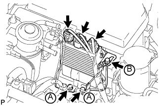

ЭЛЕКТРОННЫЙ БЛОК ПРИВОДА ФОРСУНОК > УСТАНОВКА |
| 1. УСТАНОВИТЕ КРОНШТЕЙН ЭЛЕКТРОННОГО БЛОКА ПРИВОДА ФОРСУНОК |
Закрепите кронштейн электронного блока привода форсунок 3 винтами.
| 2. УСТАНОВИТЕ ЭЛЕКТРОННЫЙ БЛОК ПРИВОДА ФОРСУНОК В СБОРЕ (для моделей без DPF) |
|  |
Закрепите электронный блок привода форсунок в сборе 3 болтами.
Подсоедините 3 разъема.
| 3. УСТАНОВИТЕ ЭЛЕКТРОННЫЙ БЛОК ПРИВОДА ФОРСУНОК В СБОРЕ (для моделей с DPF) |
Закрепите электронный блок привода форсунок в сборе 2 болтами.
Подсоедините 4 разъема.
| 4. ПОДСОЕДИНИТЕ ПРОВОД К ОТРИЦАТЕЛЬНОМУ ВЫВОДУ АККУМУЛЯТОРНОЙ БАТАРЕИ |